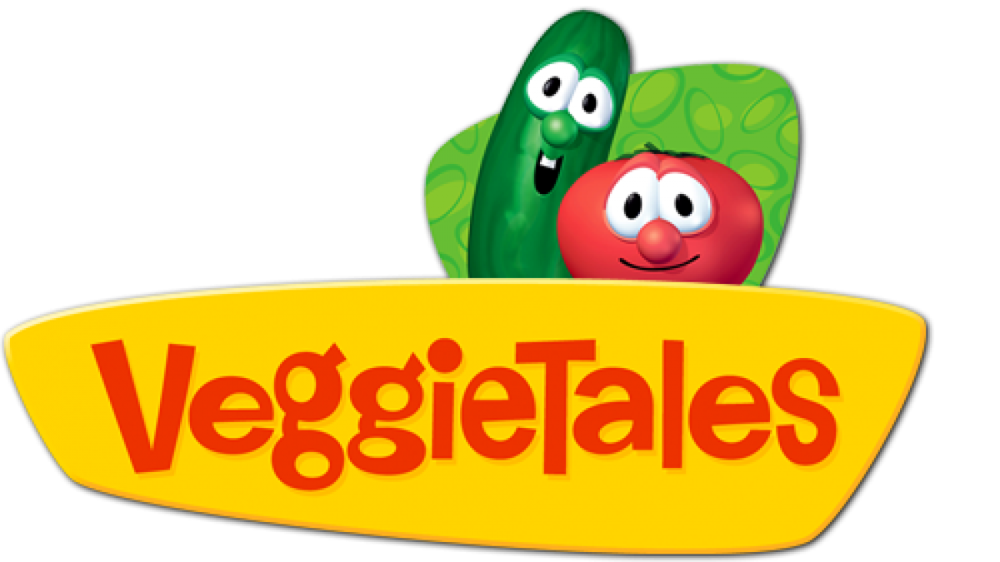

VeggieTales

With its first release in 1993, VeggieTales was one of the first ever computer animated franchises. The show consists of sentient vegetables answering questions about faith and how to be better people by acting out Biblical stories (among other things). Memorable for its unique character designs and catchy songs, VeggieTales was a wonderful part of my childhood and many other people's
Characacter Bios Here